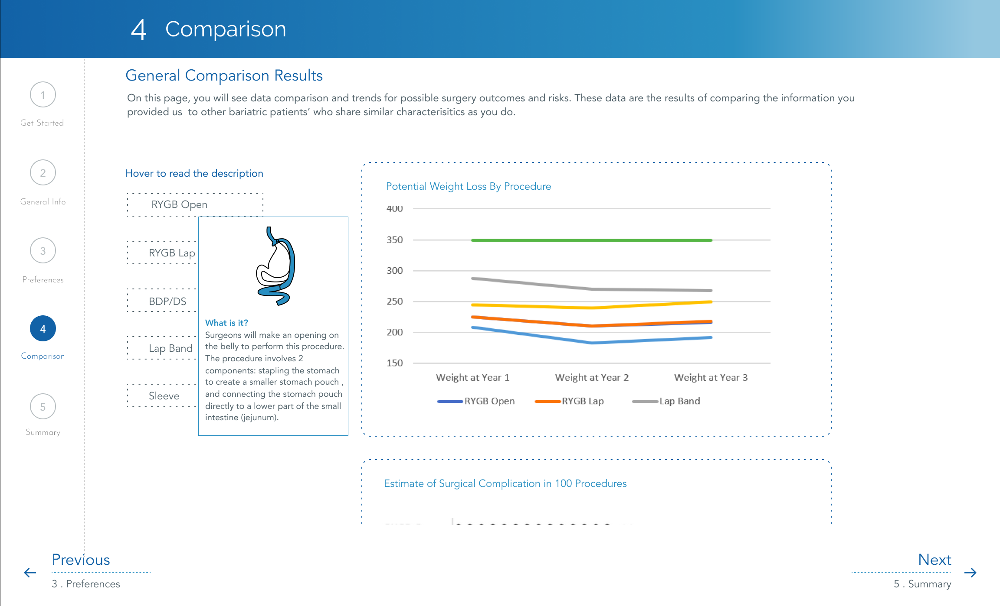
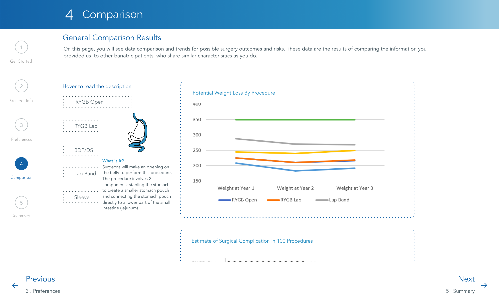

An application that informs patients about various bariatric surgery procedures and aids them in making an informed decision.
Team
4 UMSI Students
Duration
September - December 2018
Role
UX Researcher & Designer
Skills
Literature review, Research, Competitive Analysis, Sketching, Prototyping, User Testing, Interaction Design
Tools
Figma, Adobe Illustrator, Adobe Photoshop
Bariatric Surgery Decision Aid is a patient-centric application that informs patients about various bariatric surgery procedures and aids them in making an informed decision.
I and my team were participants of infoLab, a School of Information initiative. We worked as designers and consultants for an Ann Arbor based healthcare technology company called ArborMetrix. "Outcomes Calculator" is a website which belongs to Michigan Bariatric Surgery Collaborative (M.B.S.C.), and is maintained by ArborMetrix.
The current Outcomes Calculator requires physician guidance and misses an opportunity to educate patients and help them select a “best fit” surgical choice.
In order to help patients understand bariatric surgery procedures, we proposed a decision aid system that the patients could use without the presence of a doctor. It also educated patients regarding various bariatric surgeries. We also introduced a generalized and personal comparison along with a summary page.
The purpose of Get Started screen is to allow users to understand what all can be expected from the decision aid. It also serves the purpose of gaining demographic information from the users, which can later be used in General Comparison.

The General Information screen guides the users through various types of Bariatric surgeries. Not only does it give information about each surgery is done, but also information about what all can be expected pre-surgery and post-surgery. This helps users develop a mindset.
After the patients go through procedures, "Check your understanding" is a quiz section that checks patient's knowledge.
This section helps patients understand what the general demographics did in a similar situation, whereas personalized comparison helps understand results specific to your own input information.

After education the patients about procedures, this section asks for data about illness and risks. Based on the data the patient has inputed, results section compares and shows data related to choosing a specific surgery.
Summary section talks about patient's surgical options based on the data they provided. It also informs the patients about the next step they can take. The email and download option allows patients to share this information with their doctors.


 

Prototype
Outcomes Calculator is used to inform patients about various bariatric procedures and the risks related to each procedure taking into account their illnesses and demographics. This website is used by the physicians during an appointment with the patient.
Current Interactions
We mapped out the various interactions the physician/patient needed to make in order to get the results. The whole website has 4 main interactions-
In order to make the website more patient-friendly, we interviewed our stakeholders to determine the goals. We had to understand the objectives behind the previous Outcomes Calculator in order to make it more user-centered.
1. What is the relationship between physicians and bariatric patients?
2. What emotional state are people experiencing when choosing bariatric surgical options for themselves?
3. What factors influence people’s decision-making in receiving elective procedures like bariatric surgeries?
4. What other resources do physicians use besides the outcomes calculator to assist patients in decision-making?
Academic and Medical Research
We dived into understanding our project by conducting literature review on academic and medical research. Here is a document that includes the research that we conducted.
Competitive analysis helped us explore the current solutions that the medical field uses to tackle the issue of education and information. Along with medical tools, we also explored Microsoft Surface Help me choose system that basically helps the user by informing them and educating them.

Based on the research insights and the literature review we conducted, we built up a persona called "Martha". Martha is an amalgamation of real world goals and issues of people who want to undergo a bariatric procedure.
‍
Martha's persona wanted a minimally invasive surgery since she had a child. Persona development helped us understand these kind of requirements. This meant that our solution had help patients understand different kinds of surgeries, and aid them in decision making.

We brainstormed components and ways we could implement the learnings from our research. We tried to figure out ways in which we could improve the user flow of the website.

We decided to add a few steps to the existing user flow of the Outcomes Calculator. After our literature review, we understood the need of implementing a "Decision Aid" as opposed to a calculator.
Using Decision Aid instead of a calculator was influenced by the goal of educating the patients and helping them pick a bariatric procedure. Decision aid would educate the users about procedures in a holistic way by taking into consideration pre and post surgery requirements as well.

The second major decision we made was to introduce a "General comparison" and "Personalised comparison". General comparison would provide users results, by taking into consideration similar demographics. Personalized comparison would provide users results based on the selected health issues, other risk factors and  demographic information
We decided to add a Summary page at the end of the decision aid. The motive behind adding a Summary page was to help the users get all the information in one page which he would either print and take it with him during a physician visit or email it to his physician.

As this project was a part of my Master's curriculum, a lot of decision making that we did will not fit in industry scenario. Our coursework needed us to use certain methodologies to conduct research.
In this section I address a few assumptions and constraints related to this project.
↳ Doctors will accept the solution in their everyday practice
↳ The mental health of patients will not get affected with the information they are exposed to using decision aid
↳ Smart device is needed to implement the solution
↳ The information provided by Decision Aid has to be updated regularly
↳ Decision aid needs to integrate with email and other sharing platforms.
↳ Decision aid has never been tested in a real situation, hence the exact behavior of the patients using this solution is unknown.
↳ This solution is not shown to a real bariatric surgery doctor, hence the exact opinion of health professionals are unknown
This project mainly helped me understand how things work in health informatics sector. This project taught me the usage of literature reviews when contextual inquiry with the users was not possible. It helped me understand ways to acquire information through guerrilla usability testing on random users when the actual users were not available.
We have received a positive feedback about design solution from the adminitrative, medical as well as sales team at ArborMetrix. Right now, ArborMetrix plans to use the High Fidelity prototype during the Sales meetings of the company, in order to generate customers for the upcoming product. This project will be further developed by the ArborMetrix's development team.